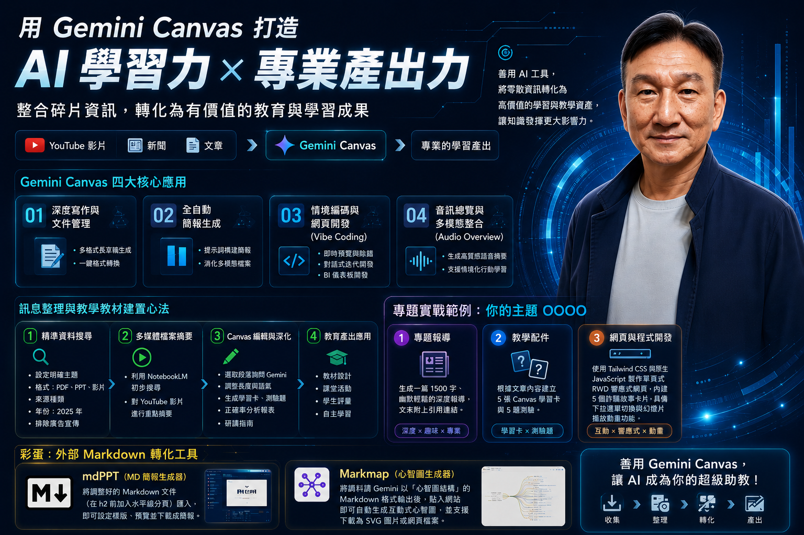

互動式 AI 工作區，協助使用者進行多模態的資料處理，是所有教育應用的起點。
從主題設定、資料蒐集到 Canvas 深化編輯，一套可重複使用的教材產出流程。
從一則主題出發，用 Canvas 一路產出報導、教材、簡報、語音摘要與互動網頁 —— 完整的六步驟成品產出流程。
就蒐集到的所有資訊，撰寫一篇深入討論 1500 字的報導文章，語氣幽默輕鬆、標題吸引人；文末整理引用資料並附上連結。
整合 Google Sites，將文章轉化為可瀏覽的網頁與資訊圖表。
切回 Canvas 文章，整理重要知識關鍵字，建立 5 張 Canvas「學習卡」與 5 題「測驗」。
將文章轉化為高質感語音摘要，支援情境化行動學習。
一鍵將文章重點自動構建為完整簡報。
使用 Tailwind CSS 與原生 JavaScript 製作單頁 RWD 響應式網頁：內建 5 個詐騙故事（如假檢警、投資詐騙）， 每則含 5 段文字與意境圖；頂部下拉選單即時切換卡片內容；Grid 版面顯示圓角陰影卡片（不使用彈出視窗）； 右上角播放鈕以幻燈片方式輪播故事，並搭配平滑淡入淡出動畫，整體 UI 簡約現代。
除了 Canvas 本身，這兩個能與 Markdown 格式搭配的視覺化工具，讓產出更進一步。
生成 Markdown 文件 → 調整文件（在 h2 前加上水平線分頁）→ 匯入 mdPPT，即可編輯、設定樣版、播放 / 預覽（Esc），並下載成簡報。
↗ edreamer.github.io/mdppt請 Gemini 以「心智圖結構」輸出 Markdown 格式後，貼入 Markmap 網站即可自動生成互動式心智圖，支援下載為 SVG 圖片或互動式網頁檔案。
↗ markmap.js.org